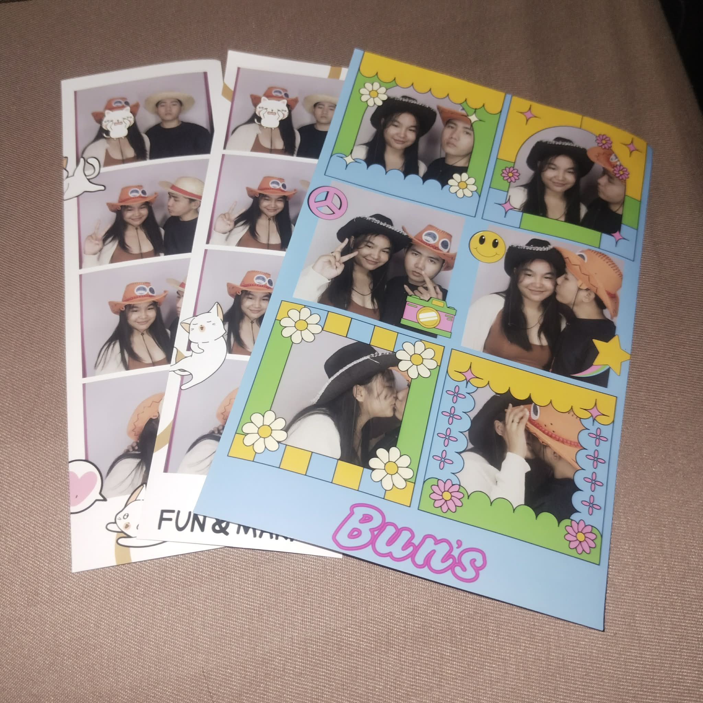
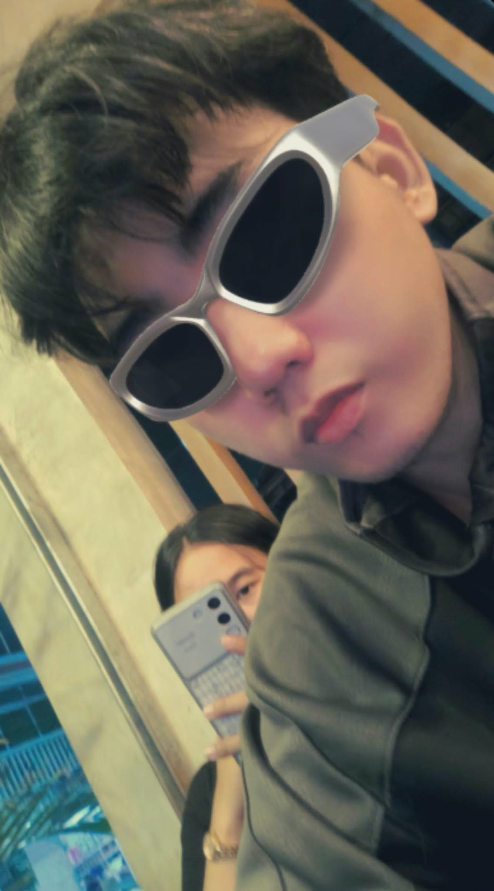
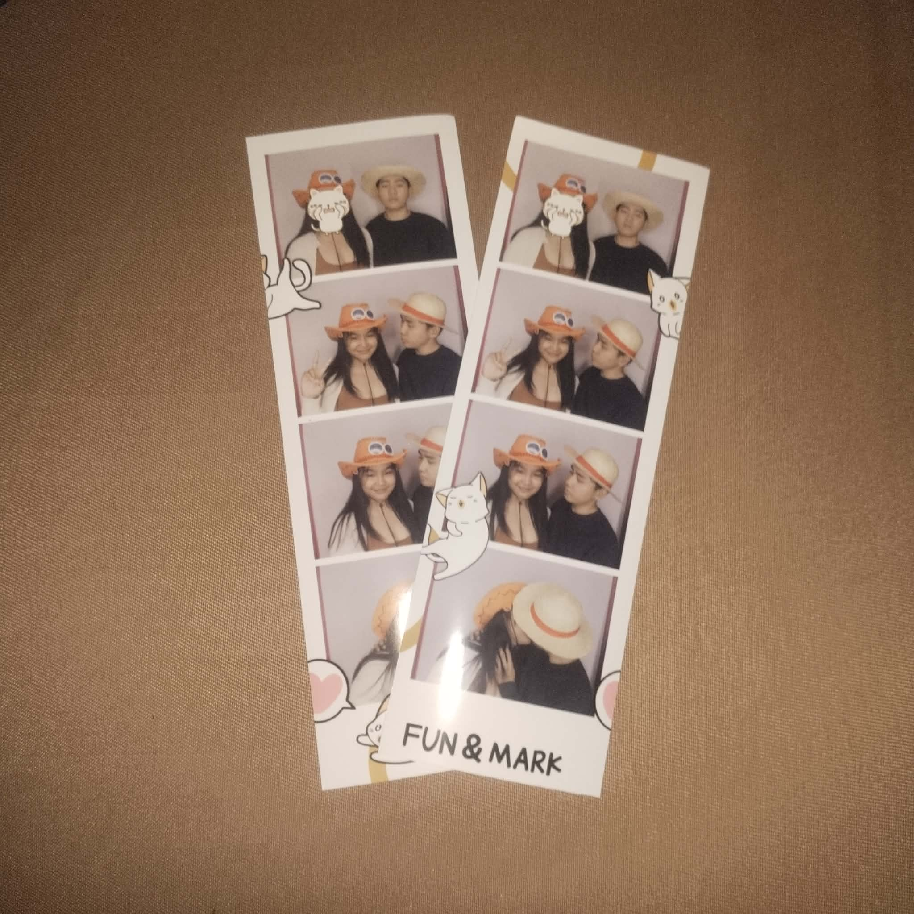
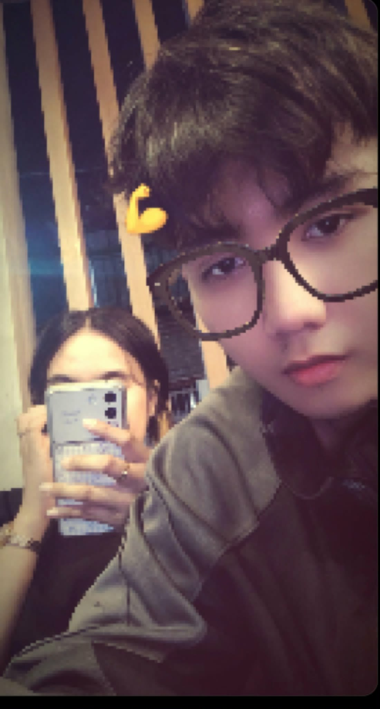
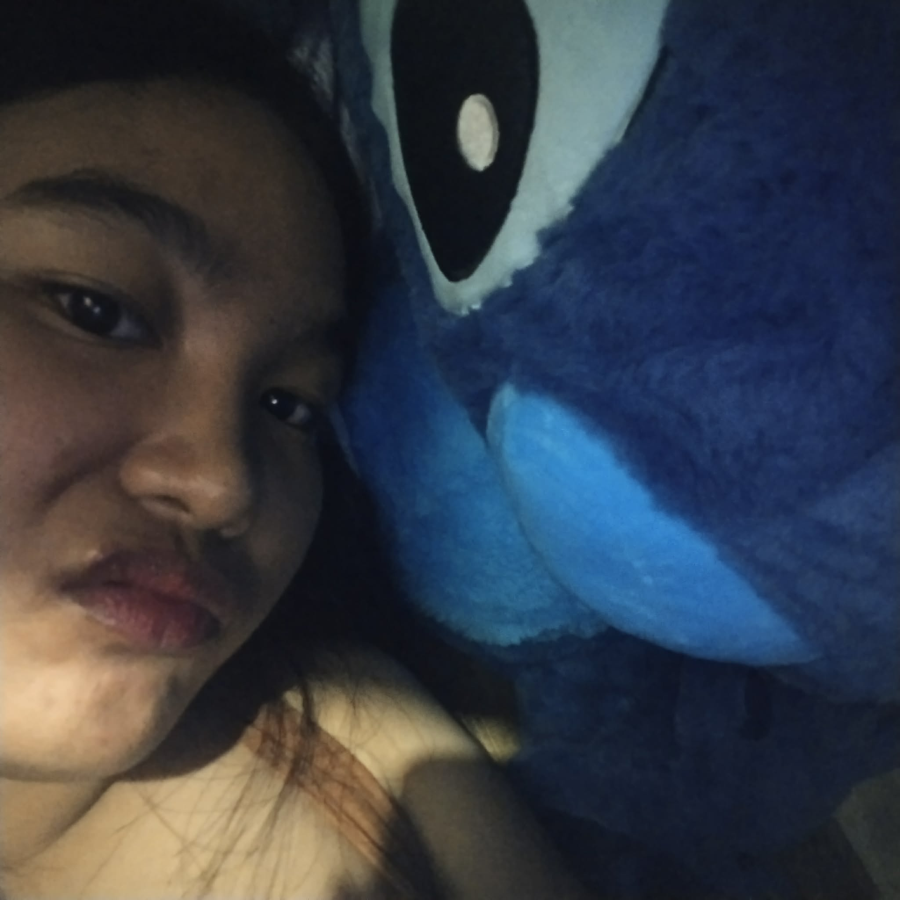
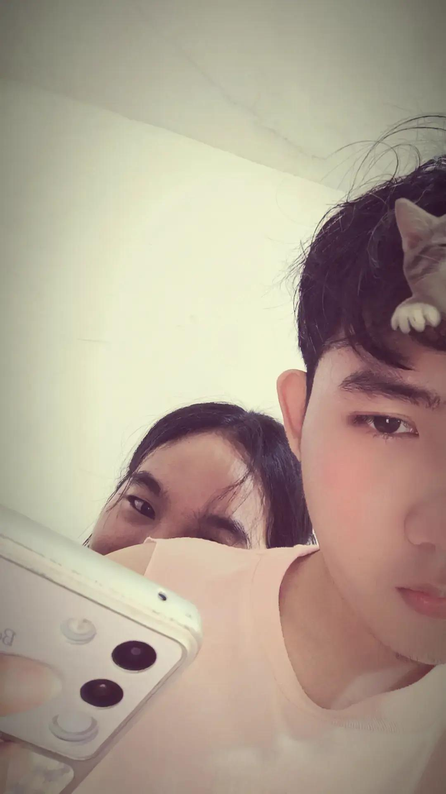

Before opening this letter,
enter your name and our monthsary date.






Happy 2nd monthsary, daddy kooo! 🥹❤️ Two months na tayo, hon, and I'm so happy na ikaw yung kasama ko. Thank you for loving me, taking care of me, helping me financially, and for all the efforts and sacrifices you make for me. I appreciate everything you do, even the little things, and I hope you know na hindi ko tine-take for granted lahat ng ginagawa mo. Thank you for being patient and understanding with me, especially kapag nag-o-overthink ako. I'm still learning to handle my emotions better, and I want to grow with you and become a better partner for us. Hon, I hope we continue to understand each other, support each other, and choose each other even when things get difficult. I want to be someone you can lean on, someone who listens to you, and someone who makes you feel loved, too. Thank you for being my daddy and for making me feel cared for. I'm really grateful to have you in my life, and I hope we get to celebrate more monthsaries and create more beautiful memories together. I love you so much, daddy kooo! Happy 2nd monthsary sa atin, hon! More months and years with you. 🥹💗🫶🏻